| SOURCE | TITLE| IMAGE MATCH | click to source page |
| HipStamp | Ajman Stamp-Airmail-Space Programs & World Famous Peoples CTO Large Sheet VF | Middle East - Saudi Arabia, Stamp / HipStamp | 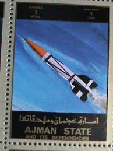 |
| Blogger.com | Dreams of Space - Books and Ephemera: Rockets and Missiles (1970) | |
| the-philatelist.com | Ajman stamp – The-Philatelist | 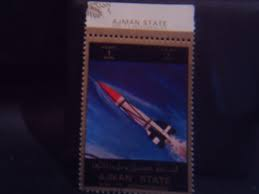 |
| Army.mil | The United States Army | Redstone Arsenal Historical Information | 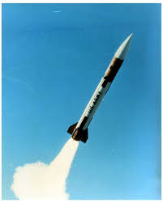 |
| SuperHeroHype | Period piece or present day? | The SuperHeroHype Forums | |
| Case Auctions | Lot 633: Large NASA Related Archive inc. Photographs, Log Book | Case Auctions | |
| Rocket Reviews | Adventures in Rocketry Saturn-1b and Saturn-V Review | 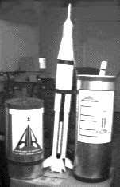 |
| It's a 1960's cheapo market stall toy but for me I absolutely love it. My latest pick up, never been removed from packaging and in mint condition. It's never going to be | 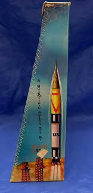 | |
| Postage Stamp Ajman State, United Arab Emirates 1973,space Rocket Editorial Stock Image - Image of missions, philately: 183946369 | 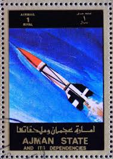 | |
| Wikimedia.org | Category:Anti-ballistic missiles - Wikimedia Commons | 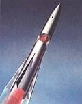 |
| Blogger.com | Model Rocket Building: Model Rocketry Magazine Letter From 1971 | 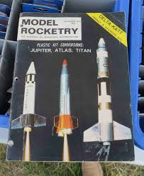 |
| X | Soviet space art by Nikolai Kolchitsky, Valentin Viktorov, Georgy Kurnin, and Gennady Tischenko. | |
| 23 V2 Rocket Model Launch Site ideas to save today | rocket, space flight, luftwaffe and more | 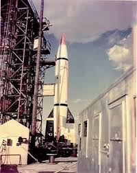 | |
| Kosmonauta.net | Spaceflight History Blog] Dyna-Soar's Martian Cousin (1960) | 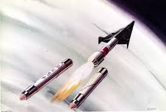 |
| WordPress.com | We Almost Didn't Go To Space | Architect of Experience | 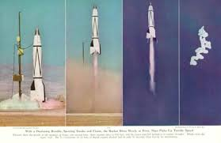 |
| spacemodeling.org | 1970 Centuri Catalog | 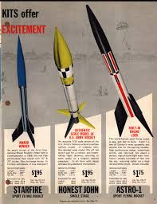 |
| wkbpic.com | Scientific American, October, 1952 | |
| Flickr | This is Cape Canaveral: missiles | This is Cape Canaveral (c… | Flickr | |
| Wikimedia.org | File:MGR-1 Honest John 02.jpg - Wikimedia Commons | 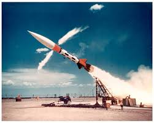 |
| Ninfinger Productions | Ninfinger Productions: 1972 Centuri Catalog | 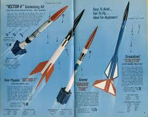 |
| YouTube | Plik Pluk Plok - Building a Rocket - YouTube | |
| Rocketry Forum | V2 paint finish | Rocketry Forum - Model Rocketry Forums | 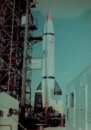 |
| TikTok | 80 years since we've touched space – 50 years since we've gone to the ... | TikTok | 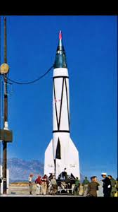 |
| Designation-Systems | V-2 (A-4) | 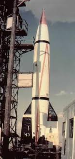 |
| The War Zone | Air Force Fighters Almost Got An Air-Launched Ballistic Missile 40 Years Ago, Now They're A Hot Item | 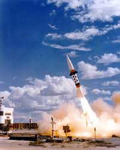 |
| NARHAMS Model Rocket Club | The ZOG-43 | 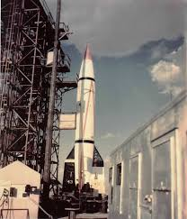 |
| skyrocket.de | Al Kahir-1 SRBM - Gunter's Space Page | 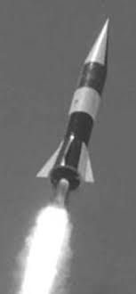 |
| Wikipedia | File:Dyna-Soar on Titan booster.jpg - Wikipedia | 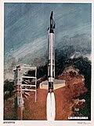 |
| Bruun Rasmussen | Themed auction: The Golden Age of Space – Bruun Rasmussen Auctioneers | 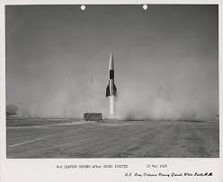 |
| WorthPoint | Vintage MPC Zenith 2 Payloader, Two Stage Payload Rocket Kit, New in Open Box | #3243428411 | 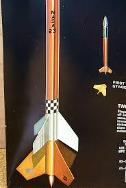 |
| NASA (.gov) | RESEARCH MEMORANDUM | 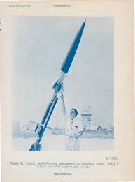 |
| wkbpic.com | Scientific American, August, 1955 | |
| spacemodeling.org | Centuri 1975 Catalog | 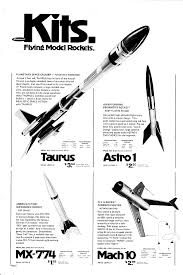 |
| PICRYL | 14 Egyptian missile program 1949 1967 Images: PICRYL - Public Domain Media Search Engine Public Domain Search | 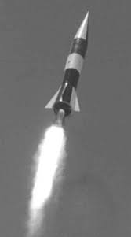 |
| The Box Art Den | Republic Terrapin rocket | |
| Photos.com | Launching Of Army Honest John Missile by Bettmann | |
| X | Is Andrew Bowie wearing eyeliner? #politicsScotland | |
| skyrocket.de | Lance (MGM-52) SRBM - Gunter's Space Page | |
| Wall in the Sky: The Untold Story of the Nike Nuclear Missile Shield Forged in secrecy and fueled by Cold War dread, the Nike missile system stood as America's invisible last line | ||
| spacemodeling.org | Antares | 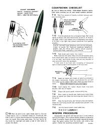 |
| Scribd | Patriot Missile System Overview | PDF | Anti Ballistic Missile | Warfare | 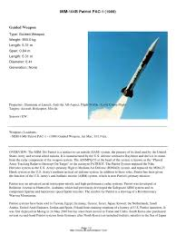 |
| Encyclopedia Astronautica | MGR-1 | |
| White Sands Missile Range Museum | v-2-buy-bonds – White Sands Missile Range Museum | |
| LF Models | R-1 (SS-1A Scunner) [K003] - €32,00 : LF Models E-shop, Produced kits and accessories of planes, LF Models E-shop, Produced kits and accessories of planes | 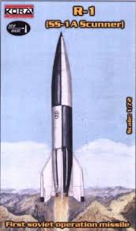 |
| Los Angeles Review of Books | Sanders I. Bernstein | Los Angeles Review of Books | |
| Open Library of Humanities | Cold War 'Astrofuturism' and 'Energy-Angst' in Destination Moon and Robert Heinlein's Farmer in the Sky | Open Library of Humanities | |
| The Box Art Den | boeing 69 1916-960 | 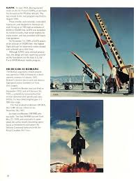 |
| The “Ticonderoga” Space Station (Starship Troopers, 1997) : r/Moviesinthemaking | ||
| קקמייקה | Jerusalem | 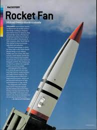 | |
| skyrocket.de | MSBS M-1 / M-2 / M-20 SLBM - Gunter's Space Page | 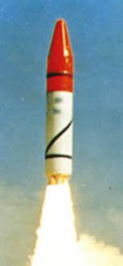 |
| Fantastic Plastic Models | V-2 Blossom Post-WWII American Missile by Kora and New Ware Models - Fantastic Plastic Models | |
| FINALLY found an original picture of RS -1 , the first Redstone launch ! | 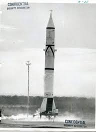 | |
| The British Interplanetary Society | THIS ISSUE: Rockets and Spacecraft | 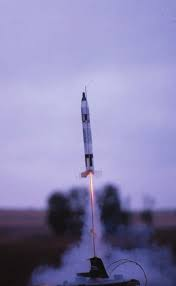 |
| YouTube | 25 Old Photos of Rocket Launches in the 1950s and 1960s - YouTube | |
| Atlas Missile Silo | Atlas Missile Silo - Missile 16A | 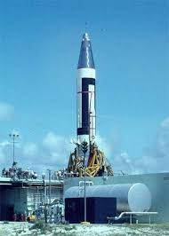 |
| skyrocket.de | Nike Zeus (XLIM-49) / Spartan (LIM-49) ABM - Gunter's Space Page | |
| eBay | 8x10 Print US Army White Sands Missile Range Nike Zeus #7318 | eBay | |
| Jack Wintermeyer (jackwintermeyer) – Profile | Pinterest | 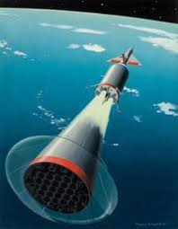 | |
| White Sands Missile Range Museum | Hands Across History | 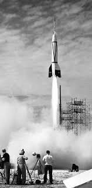 |
| Alamy | Kaher hi-res stock photography and images - Alamy | 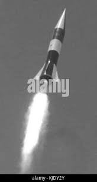 |
{kind=link}
{kind=link}